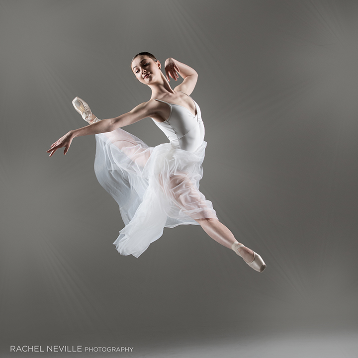
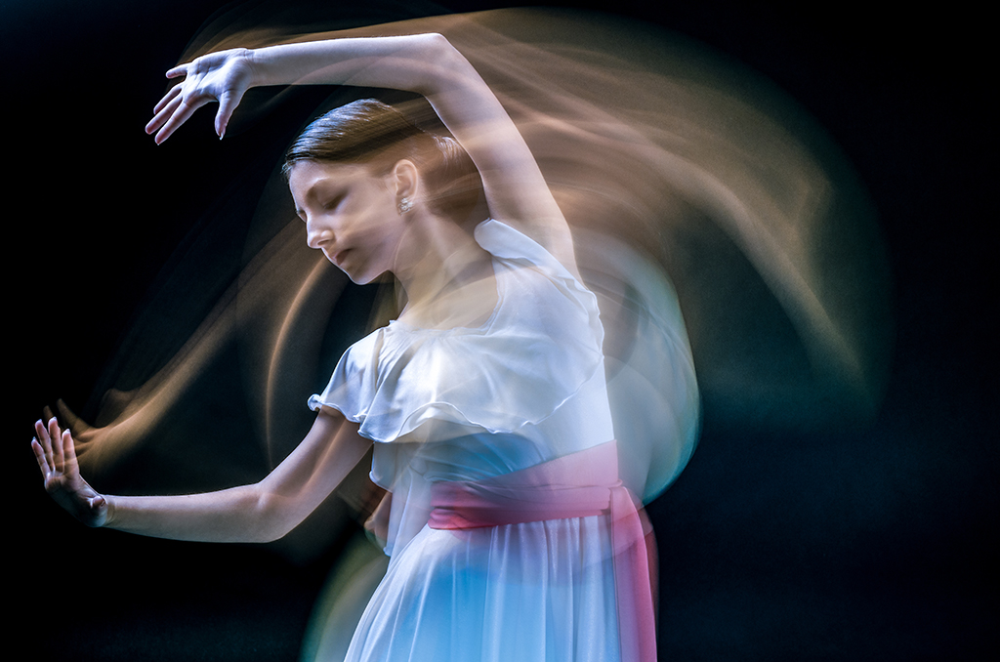
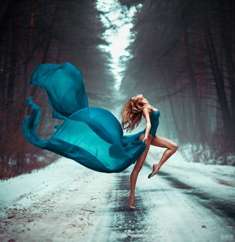

Basic Posing Guides
Movement Photography
Capturing scenes that is fast moving. Each of these scenes can come alive within your photographs if you learn how to convey motion properly.

Suspended Movement
Suspended movement. Perhaps the most obvious type of movement in photography, suspended movement illustrates one of the camera's most remarkable attributes: the ability to freeze a literal split second, to capture details imperceptible to the human eye.

Motion Blur
Often associated with poor technique or inadequate lighting conditions, motion blur can be a striking representation of dynamic energy when incorporated deliberately. Remember that motion blur, usually produced at very slow shutter speeds, can come from either side of the camera: when, between the time the shutter opens and the time the shutter closes, either a) you move or b) an element within your frame moves. That means you might seek out opportunities in which you can capture a subject’s movement amidst the stillness of the setting

Visual Flow
Visual flow takes the viewer’s eye on a graceful, often gently meandering, visual journey through your photographic composition. Flow is dynamic, continuous, and unforced. Any time the eye is naturally and predictably encouraged to move, to be carried from one area to the frame to another, you have visual flow. These are the kinds of image that make you experience great movement — even when nothing is actually moving.